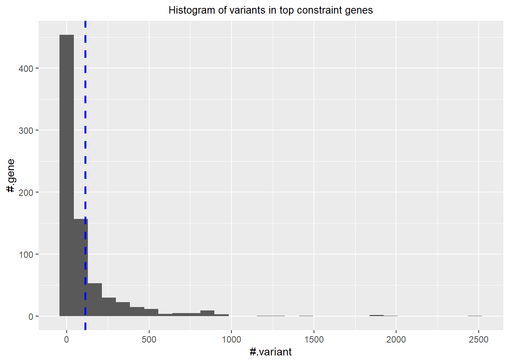
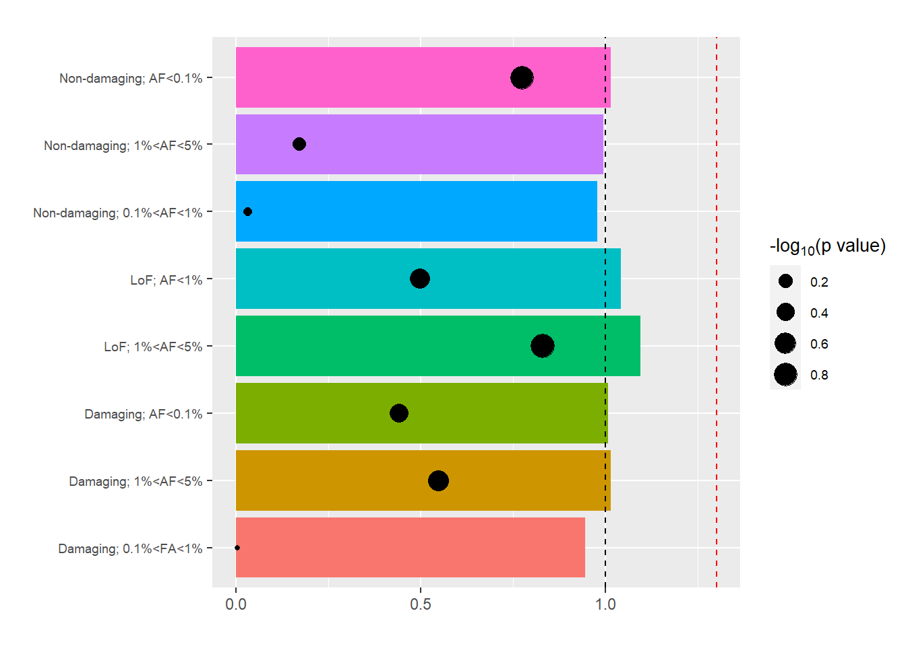
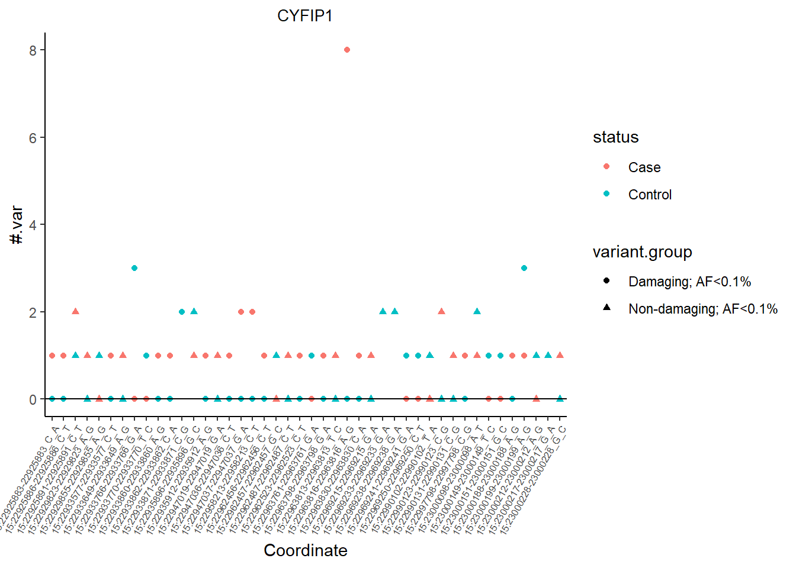
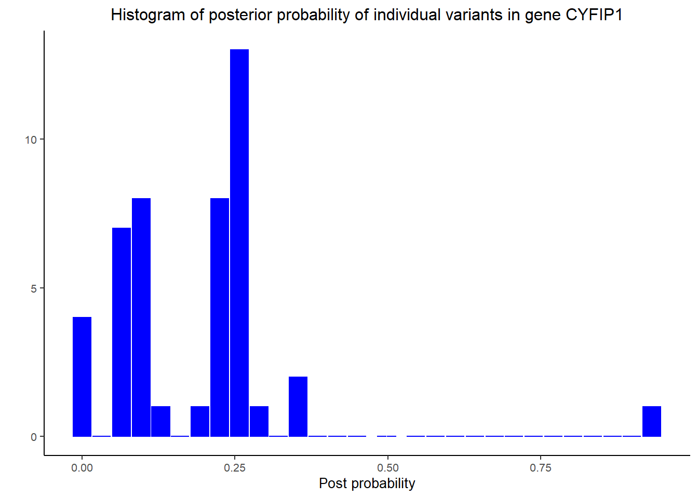
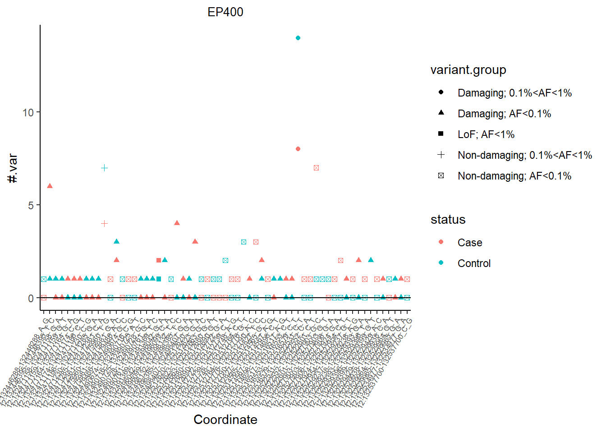
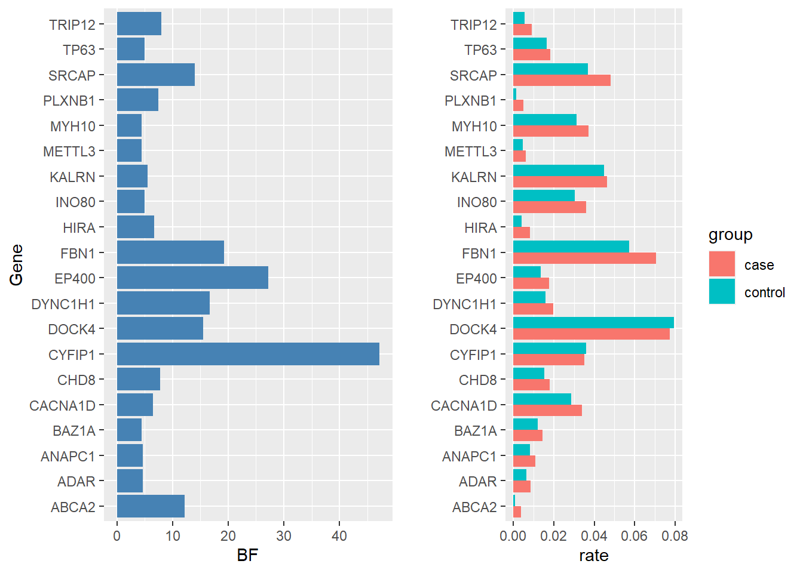
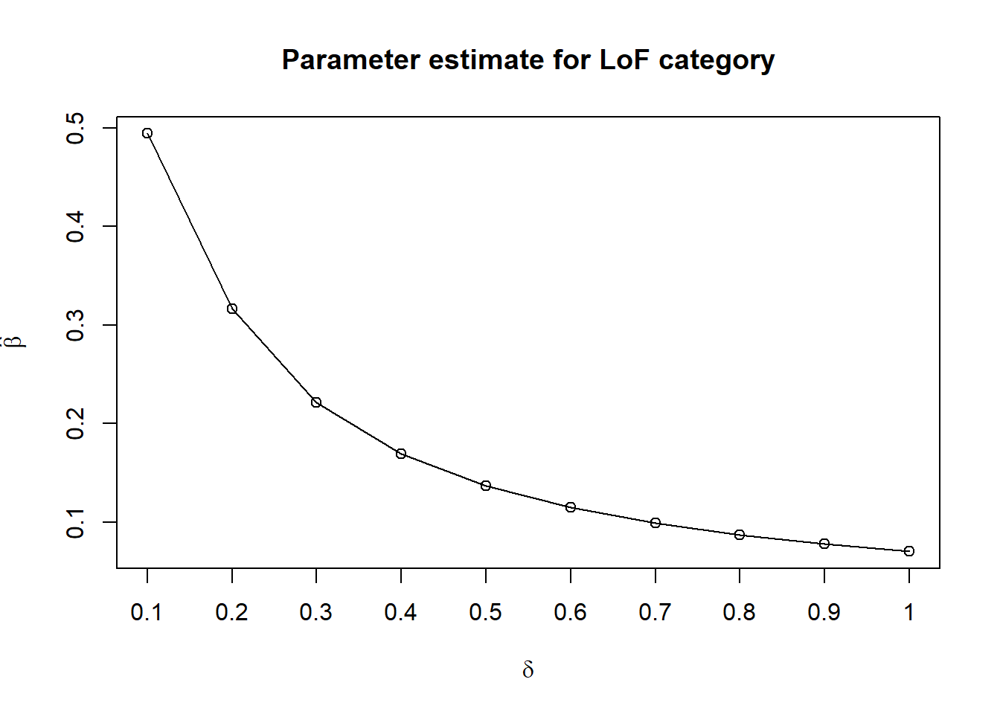
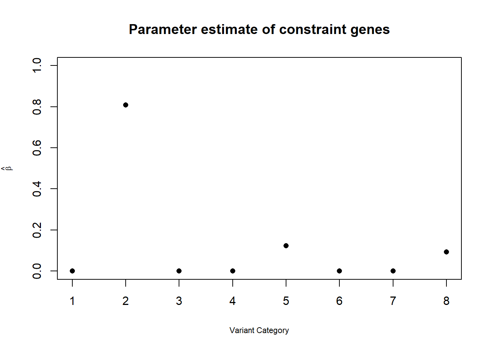
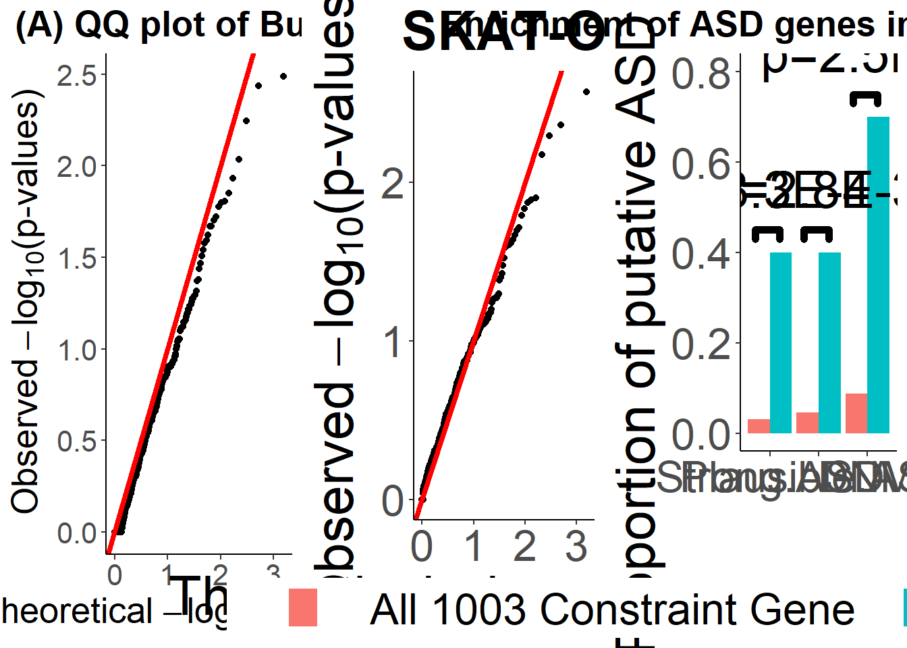

Gene Set Analysis
Shengtong Han
YYYY-MM-DD
N1=4315; N0=4315
All.Anno.Data[All.Anno.Data =="."] <- NA
All.Anno.Data$ExacAF[is.na(All.Anno.Data$ExacAF)]=0 # set AF of NA to zero
Anno.Data=All.Anno.Data[which(All.Anno.Data$ExacAF<0.05 & All.Anno.Data$Annotation!="synonymous SNV"),] # use AF cutoff and exclude synonumous SNV
var.data=as_tibble(data.frame(ID=Anno.Data$ID, No.case=Anno.Data$No.case, No.contr=Anno.Data$No.contr))
LoF.def=c("stopgain", "frameshift substitution", "splicing", "stoploss")
LoF.var=as.character(Anno.Data$ID[which(Anno.Data$Annotation %in% LoF.def==T)]) Simple burden test
- Two sample one side (“greater”) test
- high confidence gene: TADA q<0.05, SFARI cate1&2
- Moder confi: 0.3>TADA q>0.05 SFARI cat3 & S
- ID gene: 252 genes from AJHG paper
- 842 FMRP gene
- 171 AutismKB genes
- 1003 constraint genes
- RVIS gene
- Haploinsufficient genes
- Schizophrenia, SCZ gene
- 861 Olfactory gene
- 67SCZ genes are from SCZ genes with cutoff 0.3.
- de novo gene: TADA_SNV_CNV_combined_Feb7, look at column qvalue.combined, the smaller q value, the more likely to be risk gene
- Constraint gene set: use Exac Constraint data ConstraintMat.RDS, look at the last column lof.Z, the smaller value the less constraint
- ASD prior list: ASD_Priors, look at the column-post, the larger, the more likely to be risk.
| OR | p.value | rate.ca | rate.co | |
|---|---|---|---|---|
| cate1 | 0.9976341 | 0.5316724 | 0.2931634 | 0.2938586 |
| cate2 | 0.9934686 | 0.6231251 | 0.9870220 | 0.9935110 |
| cate3 | 0.9976905 | 0.5675548 | 2.3026651 | 2.3079954 |
| cate4 | 1.0008482 | 0.4606364 | 6.8361530 | 6.8303592 |
| cate5 | 1.0023832 | 0.4450279 | 1.7545771 | 1.7504056 |
| cate6 | 0.9479090 | 0.9188497 | 0.2994206 | 0.3158749 |
| cateS | 0.9940770 | 0.6500498 | 1.8669757 | 1.8780997 |
| TADAq<5% | 1.0420070 | 0.0698689 | 0.6208575 | 0.5958285 |
| TADAq<20% | 1.0066310 | 0.3421668 | 1.8294322 | 1.8173812 |
| TADAq<30% | 1.0043203 | 0.3618086 | 3.2324450 | 3.2185400 |
| TADAq<40% | 0.9981514 | 0.5762986 | 4.7550406 | 4.7638470 |
| TADAq<50% | 0.9861335 | 0.9668467 | 7.9274623 | 8.0389340 |
| TADAq>90% | 0.9910332 | 1.0000000 | 208.1110081 | 209.9939745 |
| ID gene | 0.9853493 | 0.9299548 | 4.5668598 | 4.6347625 |
| High conf | 0.9981478 | 0.5438571 | 1.3738123 | 1.3763615 |
| Mod conf | 0.9963161 | 0.6622900 | 5.8289687 | 5.8505214 |
| PSD | 0.9970598 | 0.6628794 | 9.2736964 | 9.3010429 |
| FMRP | 0.9958167 | 0.7849446 | 16.2743917 | 16.3427578 |
| AutismKB | 0.9994632 | 0.5236361 | 4.7466976 | 4.7492468 |
| constraint gene | 0.9951003 | 0.7667974 | 10.0723059 | 10.1219003 |
| RVIS | 1.0013601 | 0.3805547 | 23.5455388 | 23.5135574 |
| Haploinsuff gene | 0.9921820 | 0.9986197 | 67.0871379 | 67.6157590 |
| SCZ gene | 0.9944114 | 0.9527662 | 41.0713789 | 41.3022016 |
| Olfac.gene | 0.9763183 | 0.9999808 | 13.4906141 | 13.8178447 |
| 67SCZriskgene | NA | NA | NA | NA |
| OR | p.value | No.ca | No.co | |
|---|---|---|---|---|
| cate1 | 8.0000000 | 0.0195312 | 8 | 1 |
| cate2 | 1.5500000 | 0.0803898 | 31 | 20 |
| cate3 | 1.0395604 | 0.2884161 | 473 | 455 |
| cate4 | 1.0369004 | 0.3508540 | 281 | 271 |
| cate5 | 1.3469388 | 0.0676752 | 66 | 49 |
| cate6 | 1.7500000 | 0.1431394 | 14 | 8 |
| cateS | 0.9693878 | 0.6800507 | 380 | 392 |
| TADAq<5% | 2.0370370 | 0.0013212 | 55 | 27 |
| TADAq<20% | 1.3884298 | 0.0033555 | 168 | 121 |
| TADAq<30% | 1.3111111 | 0.0034669 | 236 | 180 |
| TADAq<40% | 1.1257143 | 0.0574301 | 394 | 350 |
| TADAq<50% | 1.0612245 | 0.1685170 | 572 | 539 |
| TADAq>90% | 0.9608535 | 0.9999889 | 22066 | 22965 |
| ID gene | 0.9067358 | 0.8390201 | 175 | 193 |
| High conf | 1.7222222 | 0.0055873 | 62 | 36 |
| Mod conf | 1.0386643 | 0.2687646 | 591 | 569 |
| PSD | 0.9911504 | 0.5562213 | 224 | 226 |
| FMRP | 1.2926829 | 0.0013805 | 318 | 246 |
| AutismKB | 1.1666667 | 0.1408879 | 119 | 102 |
| constraint gene | 1.0668954 | 0.1368236 | 622 | 583 |
| RVIS | 1.2034976 | 0.0003207 | 757 | 629 |
| Haploinsuff gene | 1.0897995 | 0.0185978 | 1250 | 1147 |
| SCZ gene | 1.0552965 | 0.0699201 | 1584 | 1501 |
| Olfac.gene | 0.9916487 | 0.6451150 | 3681 | 3712 |
| 67SCZriskgene | NA | NA | NA | NA |
Variant partitions
A gene usually has many variants such as missense, LoF, etc which contribute to the disease at different degree of deleteriousness. So we partition variants from all genes into different variant categories based on their annotation priors.
Eight variant groups
| Category | AF | fixed \(\eta\) |
|---|---|---|
| C1:LoF | \(0.01 \leq AF < 0.05\) | \(\eta_1= 0.5\) |
| C2:LoF | \(AF < 0.01\) | \(\eta_2=0.9\) |
| C3:Damaging | \(0.01 \leq AF < 0.05\) | \(\eta_3= 0.1\) |
| C4:Damaging | \(0.001 \leq AF < 0.01\) | \(\eta_4= 0.2\) |
| C5:Damaging | \(AF < 0.001\) | \(\eta_5= 0.4\) |
| C6:Non-Damaging | \(0.01 \leq AF < 0.05\) | \(\eta_6= 0.05\) |
| C7:Non-Damaging | \(0.001 \leq AF < 0.01\) | \(\eta_7= 0.1\) |
| C8:Non-Damaging | \(AF < 0.001\) | \(\eta_8=0.2\) |
- Damaging (probably damaging):Polyphen2.HDIV.score >=0.957
Constraint (top 5%~1003) gene set
Constraint gene set is from this paper.
Cons: Simple burden analysis
## `stat_bin()` using `bins = 30`. Pick better value with `binwidth`.
The burden of 8 categories is| OR | p.value | No.ca | No.co |
|---|---|---|---|
| 1.0955882 | 0.1475154 | 298 | 272 |
| 1.0418006 | 0.3169813 | 324 | 311 |
| 1.0149012 | 0.2841436 | 3133 | 3087 |
| 0.9455085 | 0.9915877 | 3505 | 3707 |
| 1.0069470 | 0.3619947 | 5508 | 5470 |
| 0.9945441 | 0.6747191 | 13307 | 13380 |
| 0.9783169 | 0.9325853 | 9114 | 9316 |
| 1.0149839 | 0.1684549 | 8535 | 8409 |

- The first catogry only has one common variant with 298/272.
Cons: Estimate all parameters, \(\delta, \eta\)
Parameter estimate

\(\hat{\delta}=0.18\).
Top genes overlapping with SFARI genes
## [1] "CYFIP1" "EP400" "FBN1" "SRCAP" "DYNC1H1" "ABCA2" "DOCK4"
## [8] "CACNA1D" "CHD8" "TRIP12"##
## Fisher's Exact Test for Count Data
##
## data: matrix(c(overlap1, overlap2, 10, 1003), nrow = 2)
## p-value = 1.983e-05
## alternative hypothesis: true odds ratio is not equal to 1
## 95 percent confidence interval:
## 3.493774 30.539486
## sample estimates:
## odds ratio
## 10.50575##
## Fisher's Exact Test for Count Data
##
## data: matrix(c(overlap1, overlap2, 10, 1003), nrow = 2)
## p-value = 0.0008249
## alternative hypothesis: true odds ratio is not equal to 1
## 95 percent confidence interval:
## 2.78616 47.74520
## sample estimates:
## odds ratio
## 12.84167strong ASD gene score 1,2,3 : enrichemnt is 8/10 vs 76/1003 gives OR 10.5058 and p value \(1.98\times 10^{-5}\)
strong ASD gene score 1,2: enrichemnt is 4/10 vs 31/1003 gives OR 12.8417 and p value \(8.24\times 10^{-4}\)
Bayesian FDR
Below are top risk genes with highest Bayes factor and enrichment with de novo rank.

** Enrichment of top MIRAGE genes with Strong ASD gene, plausible ASD gene and DNM candidate genes Strong ASD gene: SFARI score 1,2 plausible ASD gene: SFARI score 3 DNM candidate genes: top 1000 DNM genes

This is the how FDR varies as the posterior probability cutoff \(\tau\) changes with \(\hat{\delta}=0.18\) as prior.
## Warning: Column `Gene` joining factors with different levels, coercing to
## character vector## # A tibble: 15 x 5
## SKATO.pvalue.adj CMC.pvalue.adj ASUM.pvalue.adj Fisher.pvalue.a~
## <dbl> <dbl> <dbl> <dbl>
## 1 0.857 0.676 0 1
## 2 0.857 0.676 0 1
## 3 0.857 0.676 0 1
## 4 0.857 0.676 0 1
## 5 0.857 0.676 0 1
## 6 0.857 0.676 0 1
## 7 0.857 0.676 0 1
## 8 0.857 0.676 0 1
## 9 0.857 0.676 0 1
## 10 0.857 0.676 0 1
## 11 0.857 0.676 0 1
## 12 0.857 0.676 0 1
## 13 0.857 0.676 0 1
## 14 0.857 0.676 0 1
## 15 0.857 0.676 0 1
## # ... with 1 more variable: Fisher.adj.pvalue.adj <dbl>MIRAGE_gene=const.gene.BF.pvalue.combine %>% filter(post_prob>0.72)%>%select(Gene, BF, post_prob)
MIRAGE_gene%>%arrange(desc(post_prob)) # FDR<0.2## # A tibble: 3 x 3
## Gene BF post_prob
## <chr> <dbl> <dbl>
## 1 CYFIP1 27.4 0.858
## 2 EP400 15.3 0.771
## 3 FBN1 11.9 0.722const.gene.BF.pvalue.combine %>% filter(post_prob>0.52)%>%select(Gene, BF, post_prob) %>% arrange(desc(post_prob)) # FDR<0.3## # A tibble: 9 x 3
## Gene BF post_prob
## <chr> <dbl> <dbl>
## 1 CYFIP1 27.4 0.858
## 2 EP400 15.3 0.771
## 3 FBN1 11.9 0.722
## 4 SRCAP 9.83 0.683
## 5 DYNC1H1 9.48 0.675
## 6 ABCA2 8.92 0.662
## 7 DOCK4 8.45 0.650
## 8 CACNA1D 6.28 0.579
## 9 CHD8 5.19 0.532const.gene.BF.pvalue.combine %>% filter(post_prob>0.4)%>%select(Gene, BF, post_prob) %>% arrange(desc(post_prob))## # A tibble: 24 x 3
## Gene BF post_prob
## <chr> <dbl> <dbl>
## 1 CYFIP1 27.4 0.858
## 2 EP400 15.3 0.771
## 3 FBN1 11.9 0.722
## 4 SRCAP 9.83 0.683
## 5 DYNC1H1 9.48 0.675
## 6 ABCA2 8.92 0.662
## 7 DOCK4 8.45 0.650
## 8 CACNA1D 6.28 0.579
## 9 CHD8 5.19 0.532
## 10 TRIP12 4.79 0.513
## # ... with 14 more rowsASUM_gene=const.gene.BF.pvalue.combine %>% filter(ASUM.pvalue.adj<0.05) %>% select(Gene,BF, post_prob, ASUM.pvalue.adj)
ASUM_gene %>% arrange(ASUM.pvalue.adj) %>% print(n=20)## # A tibble: 16 x 4
## Gene BF post_prob ASUM.pvalue.adj
## <chr> <dbl> <dbl> <dbl>
## 1 CHST1 1.43 0.239 0
## 2 TRIM8 1.32 0.225 0
## 3 RBM14 1.19 0.208 0
## 4 ZIC2 1.19 0.208 0
## 5 ZSCAN10 1.42 0.238 0
## 6 SMARCA4 1.19 0.208 0
## 7 AP2A1 1.32 0.225 0
## 8 DHX30 1.38 0.233 0
## 9 TRA2B 1.29 0.220 0
## 10 NR2F1 1.23 0.213 0
## 11 EBF1 1.32 0.225 0
## 12 NRF1 1.19 0.208 0
## 13 TUBG1 1.25 0.215 0
## 14 PCBP1 1.25 0.215 0
## 15 MAFB 1.16 0.203 0
## 16 ADAR 3.10 0.405 0.0290right_join(as_tibble(const.gene.BF), ASUM_gene, by="Gene")%>% select(-post_prob.y, -BF.y)%>%arrange(desc(post_prob.x)) ## Warning: Column `Gene` joining factor and character vector, coercing into
## character vector## # A tibble: 16 x 6
## Gene BF.x LoF.BF nonLoF.BF post_prob.x ASUM.pvalue.adj
## <chr> <dbl> <dbl> <dbl> <dbl> <dbl>
## 1 ADAR 3.10 1.29 2.41 0.405 0.0290
## 2 CHST1 1.43 1.29 1.11 0.239 0
## 3 ZSCAN10 1.42 1 1.42 0.238 0
## 4 DHX30 1.38 1 1.38 0.233 0
## 5 TRIM8 1.32 1 1.32 0.225 0
## 6 AP2A1 1.32 1 1.32 0.225 0
## 7 EBF1 1.32 1 1.32 0.225 0
## 8 TRA2B 1.29 1 1.29 0.220 0
## 9 TUBG1 1.25 1 1.25 0.215 0
## 10 PCBP1 1.25 1 1.25 0.215 0
## 11 NR2F1 1.23 1 1.23 0.213 0
## 12 RBM14 1.19 1 1.19 0.208 0
## 13 ZIC2 1.19 1 1.19 0.208 0
## 14 SMARCA4 1.19 1 1.19 0.208 0
## 15 NRF1 1.19 1 1.19 0.208 0
## 16 MAFB 1.16 1 1.16 0.203 0left_join(as_tibble(MIRAGE_gene), ASUM_gene, by="Gene")%>% select(-post_prob.y, -BF.y)%>%arrange(desc(post_prob.x))%>% print(n=29) ## ASUM: does not work for genes with one variant, resutling in NA ## # A tibble: 3 x 4
## Gene BF.x post_prob.x ASUM.pvalue.adj
## <chr> <dbl> <dbl> <dbl>
## 1 CYFIP1 27.4 0.858 NA
## 2 EP400 15.3 0.771 NA
## 3 FBN1 11.9 0.722 NAFDR has the minimum of 0.14
| method | FDR<0.2 | FDR<0.3 |
|---|---|---|
| MIRAGE | 3 | 9 |
| SKATO | 0 | 0 |
| CMC | 0 | 0 |
| ASUM | 20 | 20 |
| Burden | 0 | 0 |
| Burden.adj | 0 | 0 |
| method | FDR<0.2 | FDR<0.3 |
|---|---|---|
| MIRAGE | 3 | 9 |
| SKATO | 0 | 0 |
| CMC | 0 | 0 |
| Burden | 0 | 0 |
| Burden.adj | 0 | 0 |
highlight genes
Cons: Estimate \(\eta_i\)
| Annotation category | fix \(\delta=0.1\) (test.stat) | fix \(\delta=0.2\) (test.stat) | estimate \(\hat{\delta}=0.18 (9.93)\) |
|---|---|---|---|
| LoF, \(0.01 \leq AF < 0.05\) | \(\eta_1=0\) (0) | 0 (0) | 0 (0) |
| LoF, \(AF < 0.01\) | \(\eta_2=0.54\) (0.63) | 0.39 (0.76) | 0.41 (0.75) |
| Damaging, \(0.01 \leq AF < 0.05\) | \(\eta_3=0\) (0) | 0 (0) | 0 (0) |
| Damaging, \(0.001 \leq AF < 0.01\) | \(\eta_4=0\) (0) | 0 (0) | 0 (0) |
| Damaging, \(AF < 0.001\) | \(\eta_5=0.23\) (5.42) | 0.15 (5.71) | 0.16 (5.72) |
| Non-Damaging, \(0.01 \leq AF < 0.05\) | \(\eta_6=0\) (0) | 0 (0) | 0 (0) |
| Non-Damaging, \(0.001 \leq AF < 0.01\) | \(\eta_7=0\) (0) | 0 (0) | 0 (0) |
| Non-Damaging, \(AF < 0.001\) | \(\eta_8=0.24\) (3.11) | 0.16 (3.49) | 0.17 (3.46) |
para.est=c(0, 0.54, 0, 0, 0.23, 0, 0, 0.24)
x=1:8
plot(x, para.est, type="p", ylim=c(0,1), cex.lab=0.7, ylab=expression(paste(hat(beta))), pch=16, xlab="Variant Category", main="Parameter estimate of constraint genes with fixed delta=0.1")
##
## Attaching package: 'gridExtra'## The following object is masked from 'package:dplyr':
##
## combine
kable(cbind(rank.BF.const.gene.common.delta[1:20,1:2], no.case, no.contr), row.names=NA, caption =("Top 20 genes of constraint genes with fixed delta"), "html")%>%
kable_styling() %>%
scroll_box(height = "200px")| Gene | BF | no.case | no.contr | |
|---|---|---|---|---|
| 212 | CYFIP1 | 47.172299 | 151 | 156 |
| 45 | EP400 | 27.197227 | 76 | 58 |
| 214 | FBN1 | 19.281002 | 304 | 247 |
| 62 | DYNC1H1 | 16.723128 | 85 | 69 |
| 677 | DOCK4 | 15.512253 | 334 | 343 |
| 217 | SRCAP | 13.958606 | 207 | 159 |
| 706 | ABCA2 | 12.227103 | 16 | 4 |
| 567 | TRIP12 | 7.989234 | 39 | 24 |
| 53 | CHD8 | 7.779481 | 78 | 66 |
| 137 | PLXNB1 | 7.507818 | 22 | 6 |
| 584 | HIRA | 6.707113 | 35 | 18 |
| 609 | CACNA1D | 6.523912 | 147 | 123 |
| 141 | KALRN | 5.577831 | 200 | 193 |
| 213 | INO80 | 4.981064 | 155 | 131 |
| 247 | TP63 | 4.972342 | 79 | 71 |
| 109 | ANAPC1 | 4.615794 | 47 | 35 |
| 14 | ADAR | 4.613623 | 37 | 28 |
| 450 | MYH10 | 4.481565 | 161 | 135 |
| 54 | METTL3 | 4.426548 | 27 | 20 |
| 394 | BAZ1A | 4.424587 | 62 | 52 |
enrichment with de novo genes
In top 1000 denovo genes, there are 9 in top 20 constarint genes and 87 in 1003 constraint genes. By Fisher exact test (9/20 vs 87/1003), OR=5.17 and p value of \(4.10 \times 10^{-4}\).
LoF category
beta.est=c(0.49419653, 0.31677155, 0.22161936, 0.16934539, 0.13697687, 0.11502861, 0.09918004, 0.08717663, 0.07778499, 0.07022805)
delta=seq(0.1, 1, by=0.1)
plot(beta.est, xaxt='n', ylab=expression(paste(hat(beta))), main="Parameter estimate for LoF category", type="o", xlab=expression(paste(delta)))
axis.label=c("0.1", "0.2", "0.3", "0.4", "0.5", "0.6", "0.7", "0.8", "0.9", "1")
axis(1,at=1:10,labels=axis.label)
test.stat=c(0.6105703, 0.7301446, 0.7621092, 0.7772918, 0.7866515, 0.7931309, 0.7979188, 0.8016140, 0.8045560, 0.8069559, cex.axis=0.8)Cons: Fixed \(\eta_i\)
With fixed parameter in every variant group, calculate the BF of every gene which is the product of BF of every variant in this gene. Below are top 20 genes with large BF.
| Gene | BF | C1 | C2 | C3 | C4 | C5 | C6 | C7 | C8 | Rank | p-val |
|---|---|---|---|---|---|---|---|---|---|---|---|
| CYFIP1 | 12.44 | - | - | - | 0.81 | 13.53 | - | 0.90 | 1.26 | 18200 | 0.0015 |
| ABCA2 | 11.96 | - | - | - | - | 1.18 | - | - | 10.13 | 18210 | 0.0016 |
| CACNA1D | 11.26 | - | - | - | - | 9.46 | 0.97 | 0.91 | 1.35 | 186 | 0.0018 |
| FBN1 | 6.94 | - | - | - | 0.83 | 5.83 | 0.95 | 0.89 | 1.71 | 1324 | 0.0041 |
| CIT | 6.68 | - | 1.63 | - | 5.90 | 0.45 | 0.95 | 0.70 | 2.31 | 13225 | 0.0044 |
| PLXNB1 | 5.78 | - | - | - | - | 3.45 | - | - | 1.68 | 364 | 0.0057 |
| CREBBP | 5.51 | - | - | - | - | 2.22 | - | 1.47 | 1.70 | 1232 | 0.0062 |
| GTF3C4 | 5.50 | - | - | - | - | 4.85 | - | 0.92 | 1.23 | 15612 | 0.0063 |
| MYH10 | 5.25 | - | - | - | - | 4.45 | - | 0.79 | 1.50 | 48 | 0.0068 |
| DNM3 | 4.91 | - | 1.63 | - | - | 2.02 | - | 1.27 | 1.18 | 16092 | 0.0076 |
| CHD8 | 4.79 | - | - | - | 0.77 | 6.66 | 0.97 | - | 0.96 | 2 | 0.008 |
| TP63 | 4.05 | - | - | - | 0.81 | 2.66 | - | 0.92 | 2.05 | 15512 | 0.0108 |
| DOCK4 | 3.91 | - | - | - | - | 4.47 | 0.90 | 0.90 | 1.07 | 18342 | 0.0116 |
| CNOT1 | 3.73 | - | - | 0.91 | - | 3.25 | 1.06 | - | 1.19 | 8577 | 0.0128 |
| HIRA | 3.04 | - | - | - | - | 2.37 | 1.06 | - | 1.21 | 17444 | 0.0192 |
| ITSN1 | 2.94 | - | - | - | 0.91 | 3.23 | - | - | 1.00 | 1479 | 0.0205 |
| HDLBP | 2.91 | - | - | - | - | 1.08 | - | 4.11 | 0.65 | 480 | 0.0210 |
| BAZ1A | 2.89 | - | - | - | - | 2.79 | 1.02 | 0.85 | 1.20 | 1392 | 0.0212 |
| SLC4A8 | 2.81 | - | - | - | - | 1.90 | - | - | 1.48 | 16562 | 0.0225 |
| VPRBP | 2.79 | - | - | - | - | 3.80 | - | - | 0.73 | 1393 | 0.0230 |
In top 1000 denovo genes, 5 are found in top 20 genes and 81 in all 1003 genes. Fisher exact test (5/20 vs 81/1003) gives OR=3.7857 and p value=0.0211.
ASD gene priors for 1003 constraint genes. (1) Enrichment with top 1000 genes: 11/20 vs 261/1003, OR=3.4696, pvalue=0.008017; (2) enrichment with top 2000 genes: 12/20 vs 419/1003, OR=2.0892, p value=0.1135.
Cons: Estimate \(\eta_i\), gene specific \(\delta_i\)
(1) LoF only
The burden is 622/583. \(\widehat{\beta}=0.74\) and test statistic is 2.99.
(2) Eight categories
| Annotation category | \(\widehat{\eta}\) | test.stat |
|---|---|---|
| LoF, \(0.01 \leq AF < 0.05\) | 0 | 0 |
| LoF, \(AF < 0.01\) | 0.81 | 2.98 |
| Damaging, \(0.01 \leq AF < 0.05\) | 0 | 0 |
| Damaging, \(0.001 \leq AF < 0.01\) | 0 | 0 |
| Damaging, \(AF < 0.001\) | 0.12 | 6.88 |
| Non-Damaging, \(0.01 \leq AF < 0.05\) | 0 | 0 |
| Non-Damaging, \(0.001 \leq AF < 0.01\) | 0 | 0 |
| Non-Damaging, \(AF < 0.001\) | 0.09 | 0 |
kable(rank.BF.const.gene.specific.delta[1:20,1:2], row.names=NA, caption =("Top 20 genes of constraint genes with gene specific delta"), "html")%>%
kable_styling() %>%
scroll_box(height = "200px")| Gene | BF | |
|---|---|---|
| 212 | CYFIP1 | 19.233983 |
| 62 | DYNC1H1 | 7.268263 |
| 45 | EP400 | 7.175237 |
| 4 | UBR4 | 6.546470 |
| 217 | SRCAP | 6.075509 |
| 677 | DOCK4 | 5.871390 |
| 214 | FBN1 | 5.577938 |
| 706 | ABCA2 | 5.437373 |
| 609 | CACNA1D | 5.328570 |
| 53 | CHD8 | 5.264254 |
| 199 | MACF1 | 4.142091 |
| 137 | PLXNB1 | 4.110564 |
| 75 | GLG1 | 4.000271 |
| 141 | KALRN | 3.779369 |
| 84 | ACACA | 3.316591 |
| 14 | ADAR | 3.246357 |
| 82 | ASIC2 | 3.156752 |
| 584 | HIRA | 3.129200 |
| 567 | TRIP12 | 3.012621 |
| 126 | ITSN1 | 2.949216 |
In top 1000 denovo genes, 6 are found in top 20 genes and 102 in all 1003 genes. Fisher exact test (6/20 vs 102/1003) gives OR=2.95, pvalue=0.0311.
ASD gene priors for 1003 constraint genes. (1) Enrichment with top 1000 genes: 10/20 vs 331/1003, OR=1.5146, pvalue=0.2896.

para.est=c(0, 0.54, 0, 0, 0.23, 0, 0, 0.24)
x=1:8
plot(x, para.est, type="p", ylim=c(0,1), cex.lab=0.7, ylab=expression(paste(hat(beta))), pch=15, col="black", xlab="Variant Category", main="Parameter estimates of constraint genes")
points(x, para.summ[,1], type="p", ylim=c(0,1), cex.lab=0.7, ylab=expression(paste(hat(beta))), pch=16,col="red")
legend(6, 0.8, c(expression(paste("common ", delta, "=0.1")), expression(paste("gene specific ", delta[i]))), col=c("black", "red"), pch=c(15,16))
abline(h=0, lty=2)


Replace “damaging” with “consensus damaging”
| Annotation category | \(\widehat{\eta}\) | test.stat |
|---|---|---|
| LoF, \(0.01 \leq AF < 0.05\) | 0 | 0 |
| LoF, \(AF < 0.01\) | 0.7318 | 2.99 |
| Consensus Damaging, \(0.01 \leq AF < 0.05\) | 0 | 0 |
| Consensus Damaging, \(0.001 \leq AF < 0.01\) | 0 | 0 |
| Consensus Damaging, \(AF < 0.001\) | 0.1310 | 10.06 |
| Non-Consensus Damaging, \(0.01 \leq AF < 0.05\) | 0 | 0 |
| Non-Consensus Damaging, \(0.001 \leq AF < 0.01\) | 0 | 0 |
| Non-Consensus Damaging, \(AF < 0.001\) | 0.0737 | 0 |
QQ plot of p values by different methods
## [1] 0.3069552## [1] 0.6547919
This is for LoF and damaging variants only.

Empirical distribution of BF by permutations
permutate the variant count in cases and controls for every gene 100 times, calculate Bayes factor by MIRAGE and get their empirical p value by comparing original BF and 100 permutated BF. The null distribution of BF is pooling BF’s of all genes through permutations together.
## # A tibble: 771 x 6
## Gene BF LoF.BF nonLoF.BF post_prob empirical.pvalue
## <fct> <dbl> <dbl> <dbl> <dbl> <dbl>
## 1 CYFIP1 27.4 1 27.4 0.858 0.00115
## 2 EP400 15.3 0.940 16.3 0.771 0.00154
## 3 FBN1 11.9 1 11.9 0.722 0.00200
## 4 SRCAP 9.83 1 9.83 0.683 0.00246
## 5 DYNC1H1 9.48 1.29 7.37 0.675 0.00259
## 6 ABCA2 8.92 1 8.92 0.662 0.00279
## 7 DOCK4 8.45 1 8.45 0.650 0.00293
## 8 CACNA1D 6.28 1 6.28 0.579 0.00428
## 9 CHD8 5.19 1.29 4.03 0.532 0.00559
## 10 KALRN 4.79 1.29 3.72 0.513 0.00658
## # ... with 761 more rowsHistogram of empirical p values by permutations
## Warning: Calling `as_tibble()` on a vector is discouraged, because the behavior is likely to change in the future. Use `tibble::enframe(name = NULL)` instead.
## This warning is displayed once per session.## `stat_bin()` using `bins = 30`. Pick better value with `binwidth`.
Constraint genes
There are 17,416 genes.
Con: Estimate \(\beta_i\), gene specific \(\delta_i\)
Non-nested gene sets
With their constraint scores, focus on top 10% genes, top 10-20% genes, top 20-30% genes, top 30-40% genes, top 40-50% genes.
beta=matrix(nrow=5, ncol=8)
rownames(beta)=c("<10%", "10-20%", "20-30%", "30-40%", "40-50%")
beta[1,]=c(0, 0.6195, 0, 0.0025, 0.0427, 0, 0, 0.0855)
beta[2,]=c(0, 0.0073, 0, 0, 0.0316, 0, 0, 0.0588)
beta[3,]=c(0, 0.0179, 0, 0, 0.0284,0, 0.0294, 0.0390)
beta[4,]=c(0, 0.0883, 0, 0, 0.0245,0, 0, 0.0017)
beta[5,]=c(0, 0.2706, 0, 0, 0.0038,0, 0.0187, 0.0006)
plot(beta[,1], ylim=c(0,1),cex=0.1, type="o", xaxt="n", xlab="Score quantile ", pch=16, ylab=expression(paste(hat(beta))), cex.lab=0.75, main="Parameter estimates of top five non-nested constraint gene sets",)
axis(side=1, at=1:5, labels=rownames(beta),cex.axis=0.8)
for (i in 2:8)
lines(beta[,i], type="o", col=i, pch=16)
betas=c(expression(paste(hat(beta)[1])),expression(paste(hat(beta)[2])), expression(paste(hat(beta)[3])),expression(paste(hat(beta)[4])),
expression(paste(hat(beta)[5])),expression(paste(hat(beta)[6])), expression(paste(hat(beta)[7])),expression(paste(hat(beta)[8])))
#legend(2, 1, c(paste("beta", seq(1,8), sep="")), col=seq(1,8), lty=rep(1,8))
legend(4, 1, betas, col=seq(1,8), lty=rep(1,8), ncol=2)
Replace “Damaging” with “Consensus damaging”
beta=matrix(nrow=5, ncol=8)
rownames(beta)=c("top10%", "top10-20%", "top20-30%", "top30-40%", "top40-50%")
beta[1,]=c(0, 0.6275, 0, 0, 0.0454, 0, 0, 0.0848)
beta[2,]=c(0, 0.0326, 0, 0, 0.0667, 0, 0, 0.0071)
beta[3,]=c(0, 0.0379, 0, 0, 0.0365,0, 0.0509, 0.0034)
beta[4,]=c(0, 0.1009, 0, 0, 0.0020,0, 0, 0.0008)
beta[5,]=c(0, 0.2652, 0, 0, 0.0350,0, 0.0080, 0.0004)
plot(beta[,1], ylim=c(0,1), type="o", xaxt="n", xlab="", ylab=expression(paste(hat(beta))), main="Parameter estimate of five non-nested gene sets")
axis(side=1, at=1:5, labels=rownames(beta),cex.axis=0.7)
for (i in 2:8)
lines(beta[,i], type="o", col=i)
legend(4, 1, c(paste("beta", seq(1,8), sep="")), col=seq(1,8), lty=rep(1,8))| constraint level | C5: Consensus Damaging, \(AF < 0.001\) | C8: Non-Consensus Damaging, \(AF < 0.001\) |
|---|---|---|
| top 10% | 34,028/33,508=1.0155 | 30,922/30,736=1.0061 |
| top 10-20% | 17,184/16,925=1.0153 | 15,738/15,894=0.9902 |
| top 20-30% | 12,371/12,588=0.9828 | 12,035/12,216=0.9852 |
| top 30-40% | 11,972/12,038=0.9945 | 10,652/10,605=1.0044 |
| top 40-50% | 11,055/11,147=0.9917 | 9,548/9,903=0.9642 |
TADA gene (q<5%)
Only 46 genes with TADA q values less than 5%.
TADA: Estimate \(\beta\), fixed \(\delta=1\)
Only LoF variants
In the simple burden analysis (see Table above), LoF variants is 55/27. With \(\delta=1\), \(\widehat{\beta}=0.5692\), and test statistic is 12.0211.
TADA: Estimate \(\beta_i\), gene specific \(\delta_i\)
Use 1-FDR of every gene as priors to estimate \(\beta_i\).
Only LoF category
\(\widehat{\beta}=0.63\), test statistics is 10.07.
RVIS gene
RVIS:Estimate \(\beta_i\), gene specific \(\delta_i\)
Quantile score <50 (8437) genes
| Annotation category | \(\widehat{\beta}\) | test.stat |
|---|---|---|
| LoF, \(0.01 \leq AF < 0.05\) | 0 | 0 |
| LoF, \(AF < 0.01\) | 0.17 | 6.06 |
| Damaging, \(0.01 \leq AF < 0.05\) | 0 | 0 |
| Damaging, \(0.001 \leq AF < 0.01\) | 0 | 0 |
| Damaging, \(AF < 0.001\) | 0.06 | 13.55 |
| Non-Damaging, \(0.01 \leq AF < 0.05\) | 0 | 0 |
| Non-Damaging, \(0.001 \leq AF < 0.01\) | 0 | 0 |
| Non-Damaging, \(AF < 0.001\) | 0.08 | 11.34 |
with different quantile score
Replace “Damaging” with “Consensus damaging”
beta=matrix(nrow=5, ncol=8)
rownames(beta)=c("Quantile score<10", "10-20", "20-30", "30-40", "40-50")
beta[1,]=c(0, 0.5309, 0, 0, 0.0414, 0, 0, 0.0794)
beta[2,]=c(0, 0.1402, 0, 0, 0.1098, 0, 0, 0.0464)
beta[3,]=c(0, 0.0026, 0, 0, 0.0222,0, 0.0197, 0.1779)
beta[4,]=c(0, 0.0016, 0, 0, 0.0770,0, 0, 0.0558)
beta[5,]=c(0, 0.1103, 0, 0, 0.1246,0, 0, 0.0369)
plot(beta[,1], ylim=c(0,0.6), type="o", xaxt="n", xlab="", ylab=expression(paste(hat(beta))), main="Parameter estimate of five non-nested gene sets")
axis(side=1, at=1:5, labels=rownames(beta),cex.axis=0.7)
for (i in 2:8)
lines(beta[,i], type="o", col=i)
legend(4, 0.5, c(paste("beta", seq(1,8), sep="")), col=seq(1,8), lty=rep(1,8))
Whole genome
consider all 15624 genes in ASD data.
Whole: Estimate \(\beta_i\), gene specific \(\delta_i\)
| Annotation category | \(\widehat{\beta}\) | test.stat |
|---|---|---|
| LoF, \(0.01 \leq AF < 0.05\) | 0 | 0 |
| LoF, \(AF < 0.01\) | 0.08 | 3.94 |
| Damaging, \(0.01 \leq AF < 0.05\) | 0 | 0 |
| Damaging, \(0.001 \leq AF < 0.01\) | 0 | 0 |
| Damaging, \(AF < 0.001\) | 0.06 | 23.85 |
| Non-Damaging, \(0.01 \leq AF < 0.05\) | 0 | 0 |
| Non-Damaging, \(0.001 \leq AF < 0.01\) | 0 | 0 |
| Non-Damaging, \(AF < 0.001\) | 0.06 | 11.42 |
para.est=c(0, 0.08, 0, 0, 0.06, 0, 0, 0.06)
x=1:8
plot(para.est, type="p", ylim=c(0,0.5), cex.lab=0.7, ylab=expression(paste(hat(beta))), pch=16, xlab="Variant Category", main="Parameter estimate of all genes in the whole genome")
Session information
This R Markdown site was created with workflowr